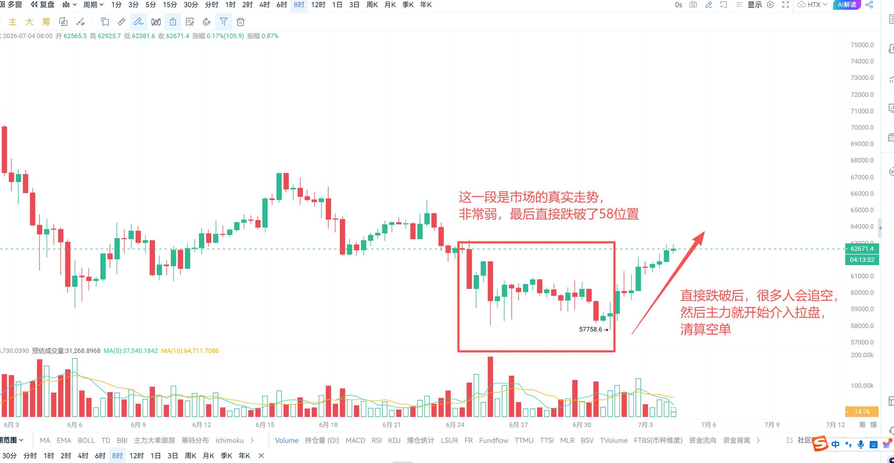
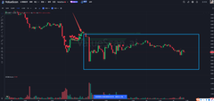
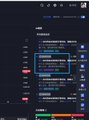
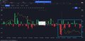

来看看BTC走势的真实情况：
主力没有介入，很快就会崩盘。
多头力量耗尽后，主力开始介入清算空单。
市场永远比我们理解的要复杂一些，
但是大趋势还是下跌，远远没有到底部。
肉眼可见的是盘面弱到了极致，
主力可以改变短期的走势，
但是大的方向他改变不了，
大趋势要改变一定是长时间的换手。
Show more
Quote
Jun 29
After 2 PM on June 24, the main players stopped providing liquidity,
The trend over the past 5 days is the true market battle between bulls and bears,
So seeing the recent rebound being so weak, with BTC peaking at 609,
If the main players were stepping in to drive the



